PI AI Analyst: Concept Development
User Manual
1. Getting Started
Application URL: https://pi-ai-analyst.ensou.xaipp.pgwproper.net/
UAT Environment: Users are automatically logged in. Your name appears in the top-right corner.
The application has two main tabs:
- Data Agent — Text-to-SQL tool for data queries
- Concept Development — Policy and rule analysis (this manual)
2. Client Policy Insights
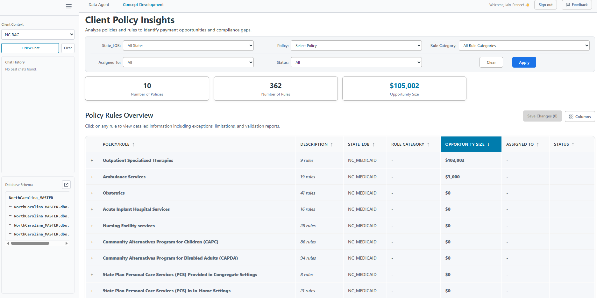
Figure 2.1: Landing Page
(Click to enlarge)
Key Elements
| Element | Description |
|---|
| Client Context | Dropdown (left sidebar) to switch clients (NC RAC, NV, Amerihealth, etc.) |
| Filters | State_LOB, Policy, Rule Category, Assigned To, Status |
| Summary Cards | Number of Policies, Number of Rules, Opportunity Size |
| Policy Rules Table | Main table showing all policies and rules |
Using Filters
- Select values from filter dropdowns
- Click Apply to filter | Click Clear to reset
3. Working with Rules
3.1 Expand Policy to View Rules
Click the + icon next to a policy to expand and view individual rules.
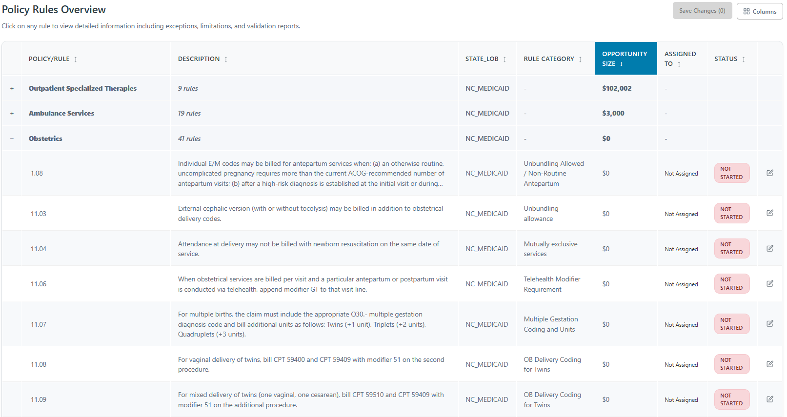
Figure 3.1: Expanded Policy View
(Click to enlarge)
3.2 Search Rules by Description
Use the Search description box to filter rules by keywords in their description.
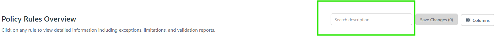
Figure 3.2a: Search Description Box
(Click to enlarge)
How to Search
- Locate the Search description box (above the Policy Rules table)
- Enter keyword(s) to search for (e.g., "outpatient")
- The table filters to show only rules with matching descriptions
- Matching keywords are highlighted in yellow
- Click the X to clear the search
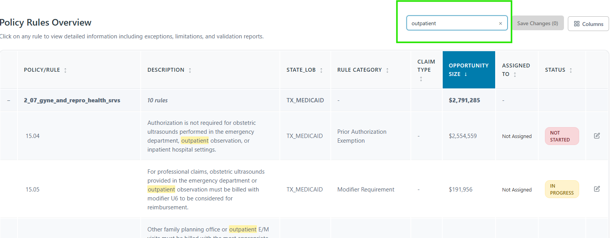
Figure 3.2b: Search Results with Keyword Highlighting
(Click to enlarge)
Note: This is an exact match search. Enter the keyword(s) exactly as they appear in the rule descriptions.
3.3 Customize Columns
Click Columns button (top-right) to show/hide columns like Claims in Scope, Paid Amount, Status Reason.
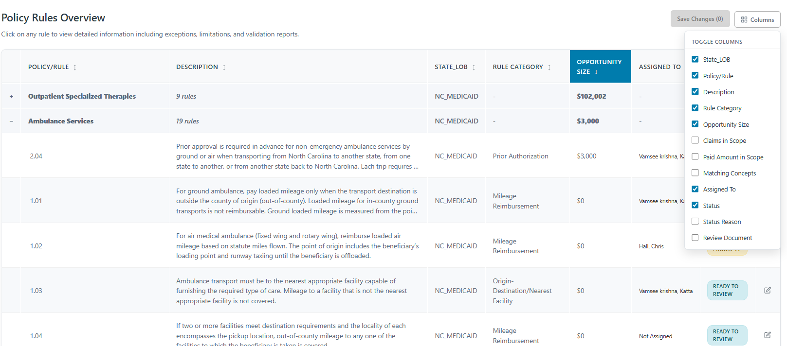
Figure 3.2: Column Toggle
(Click to enlarge)
3.4 Status Values
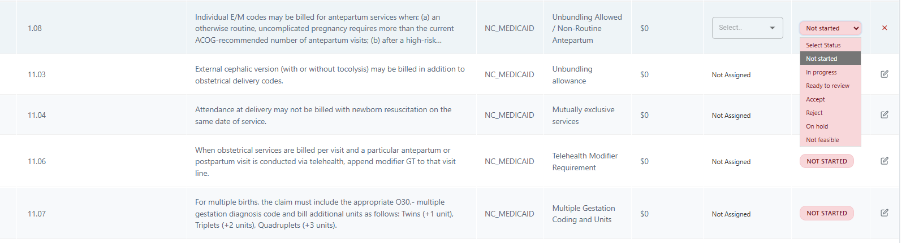
Figure 3.3: Status Options
(Click to enlarge)
| Status | Type | Notes |
|---|
| Not Started | Manual | Default state |
| In Progress | Manual | Work begun |
| On Hold | Manual | Requires reason (view in Status Reason column via Column selector) |
| Not Feasible | Manual | Cannot implement |
| Ready to Review | Automatic | Set on finalization from Rule Insights page |
| Accept | Automatic | Appears in Rule Details page only after rule finalization |
| Reject | Automatic | Appears in Rule Details page only after rule finalization |
3.5 Edit Rule Assignment & Status
Steps
- Click the edit icon (pencil) on the rule row
- Select Assigned To from dropdown
- Select Status from dropdown
- Click Save Changes
- Review changes in confirmation dialog and click Confirm
Email Notification: When a rule is assigned to a user, they will automatically receive a notification email alerting them of the new assignment.
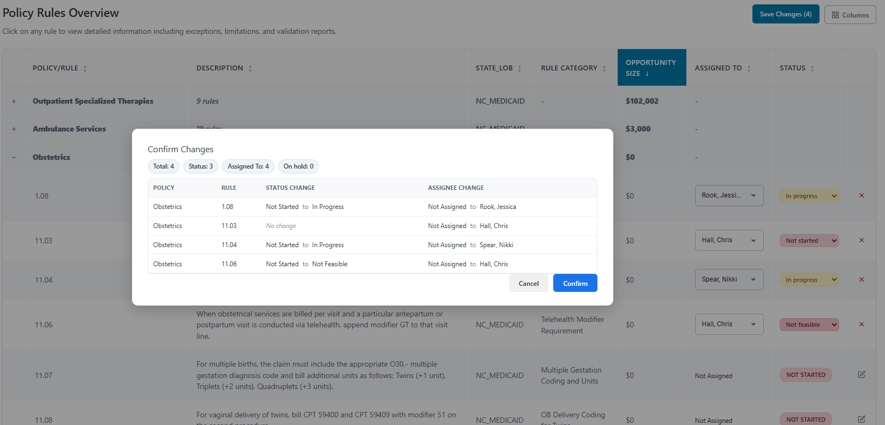
Figure 3.4: Confirm Changes Dialog
(Click to enlarge)
3.6 Status Restrictions
Ready to Review: Cannot be manually selected. Auto-set when query is finalized.
Accept/Reject: Only available on Rule Details page for finalized rules.
On Hold Status
When selecting "On hold", you must provide a reason from the following options:
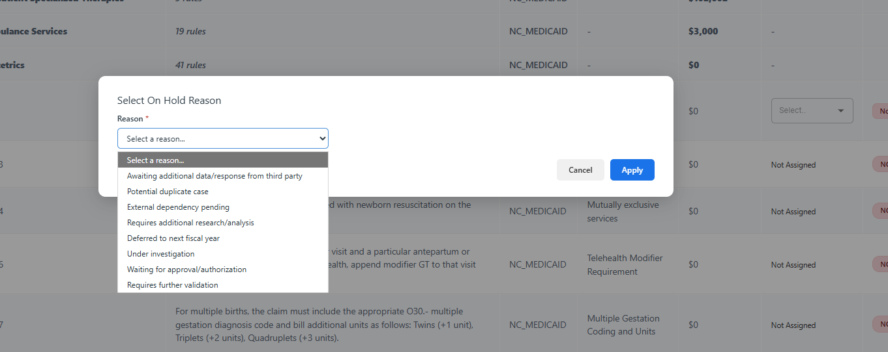
Figure 3.5: On Hold Reason Selection
(Click to enlarge)
- Awaiting additional data/response from third party
- Potential duplicate case
- External dependency pending
- Requires additional research/analysis
- Deferred to next fiscal year
- Under investigation
- Waiting for approval/authorization
- Requires further validation
Viewing On Hold Reasons: The selected reason is captured in the Status Reason column. To view this column, click the Columns button and enable "Status Reason" from the column selector.
4. Reviewing & Finalizing Queries
Click any rule row to open Rule Details with three tabs: Rule Details | Rule Insights | Rule Documentation
4.1 Rule Details Tab
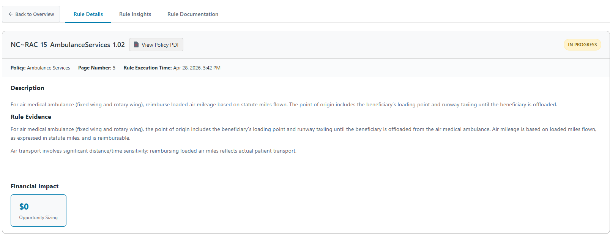
Figure 4.1: Rule Details Tab
(Click to enlarge)
| Element | Description |
|---|
| View Policy PDF | Open source policy document |
| Description | Full rule text |
| Rule Evidence | Supporting context from policy |
| Financial Impact | Opportunity Sizing value |
4.2 Rule Documentation Tab
Use the Rule Documentation tab to add notes and research for collaboration during the review process.
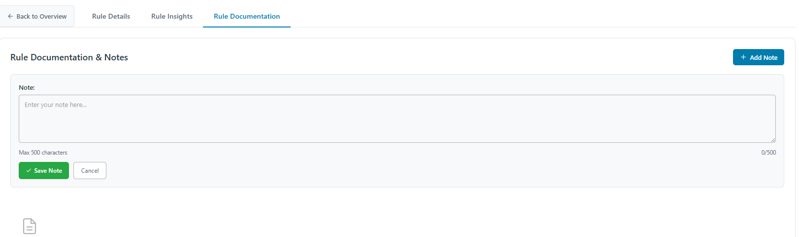
Figure 4.2: Adding a Note
(Click to enlarge)
Add a Note
- Click + Add Note
- Enter text (max 500 characters) — can include URLs
- Click Save Note
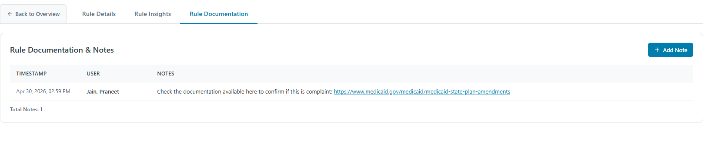
Figure 4.3: Notes List
(Click to enlarge)
Tip: Document research findings and add reference URLs before finalizing the query. Notes become part of the rule finalization package and help other team members understand the review decisions.
4.3 Rule Insights Tab
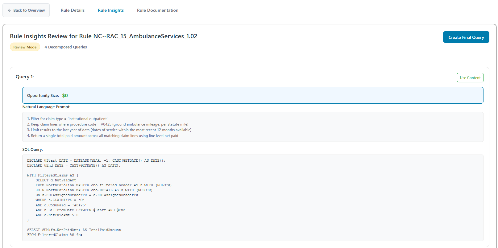
Figure 4.4: Rule Insights with Decomposed Query
(Click to enlarge)
Each query card shows:
- Natural Language Prompt — Human-readable explanation
- SQL Query — Generated SQL code
- Opportunity Size — Dollar value
- Use Content — Copy to final query form
4.4 QA and Validate Query Before Finalizing
Before finalizing a query, validate and test it using the Data Agent tool. There are two approaches depending on your needs:
Option 1: Test Existing SQL Query
Use this approach to validate the generated SQL without making changes.
Step 1: Copy SQL Query from Rule Insights
On the Rule Insights page, locate the SQL Query section and copy the query code.
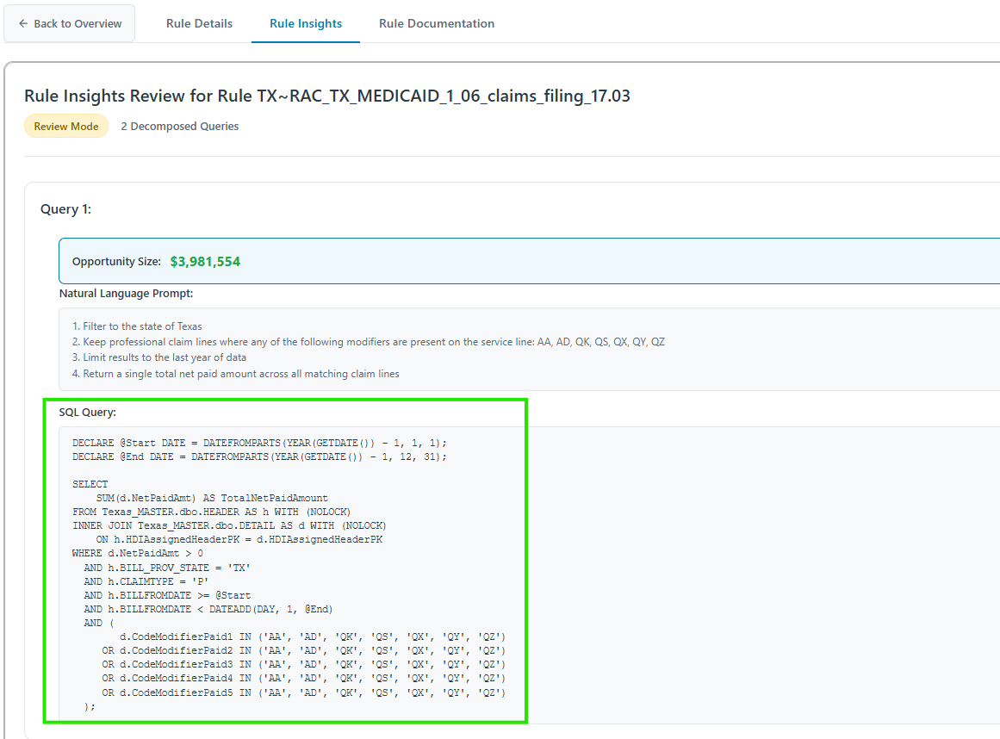
Figure 4.4a: SQL Query on Rule Insights Page
(Click to enlarge)
Step 2: Navigate to Data Agent
Click the Data Agent tab in the application header.
Step 3: Paste Query with Instructions
In the Data Agent, paste the SQL query with instructions to test it:
Show me some claim example outputs from this query: [paste SQL here]
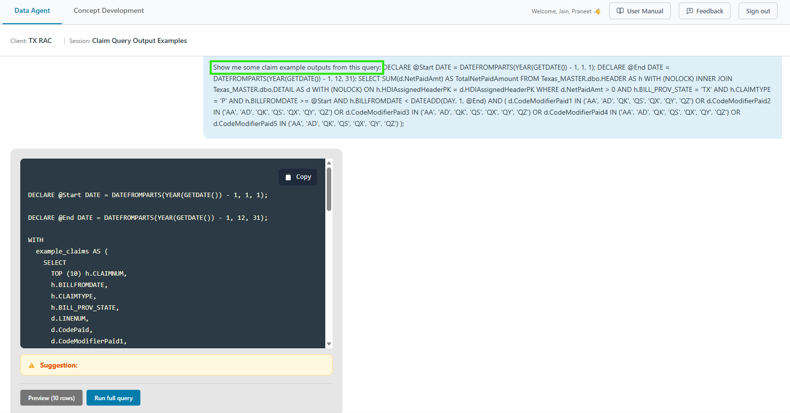
Figure 4.4b: Testing Query in Data Agent
(Click to enlarge)
Step 4: Review Results
Review the generated results to verify:
- Query returns expected claim data
- Filters and modifiers are working correctly
- Date ranges are appropriate
- Results align with rule requirements
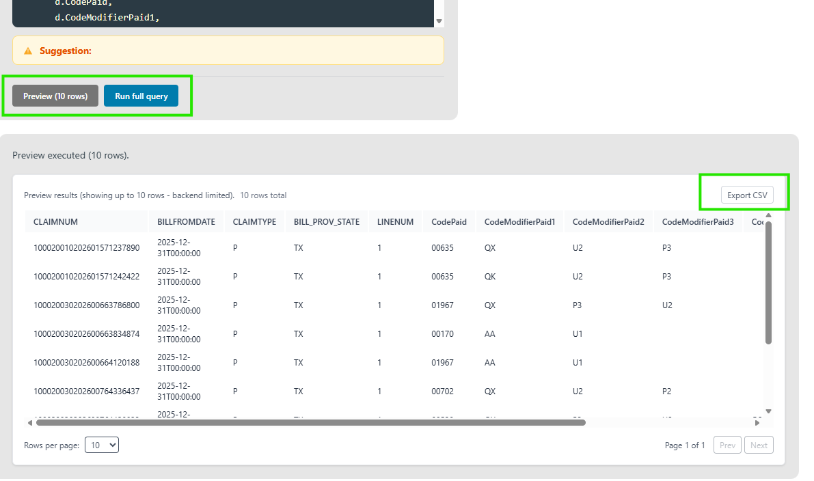
Figure 4.4c: Query Results in Data Agent
(Click to enlarge)
Tip: Use Data Agent to explore edge cases, validate modifiers, date ranges, and claim types before finalizing the query.
Option 2: Modify Prompt to Generate New SQL
Use this approach when you need to make changes to the rule logic (e.g., update modifiers, change filters). Modify the Natural Language Prompt and generate a fresh SQL query:
Step 1: Copy the Natural Language Prompt
On the Rule Insights page, copy the Natural Language Prompt (the numbered steps describing the query logic).
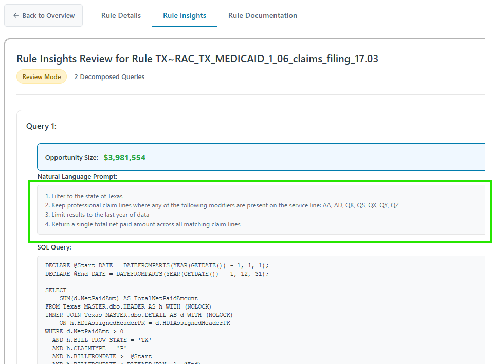
Figure 4.4d: Copy Natural Language Prompt from Rule Insights
(Click to enlarge)
Step 2: Modify and Run in Data Agent
Paste the prompt in Data Agent and make your changes (e.g., update modifier list, adjust filters). The Data Agent will generate a new SQL query based on your modified prompt.
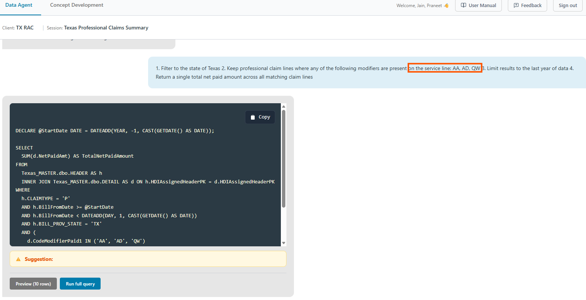
Figure 4.4e: Modified Prompt Generates New SQL in Data Agent
(Click to enlarge)
Step 3: Test and Validate
Use Preview (10 rows) or Run full query to test the generated SQL and verify the results match your expectations.
Use Case: This approach is useful when you want to experiment with rule changes (e.g., testing different modifier combinations) before updating the final query.
4.5 Create Final Query
Steps
- Click Create Final Query button
- Click Use Content on a query to auto-populate, or enter manually
- Fill in all required fields:
- Natural Language Prompt — Description of the query
- SQL Query — The final SQL code
- Opportunity Size ($) — Dollar value
- Document URL — Link to associated file/details (required)
- Click Finalize Query
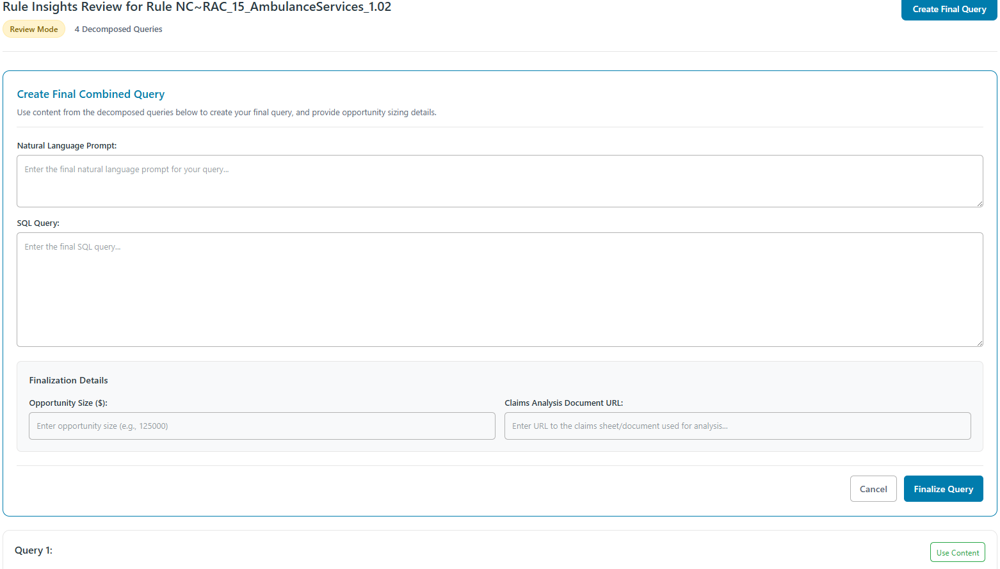
Figure 4.5: Create Final Query Form
(Click to enlarge)
4.5 After Finalization
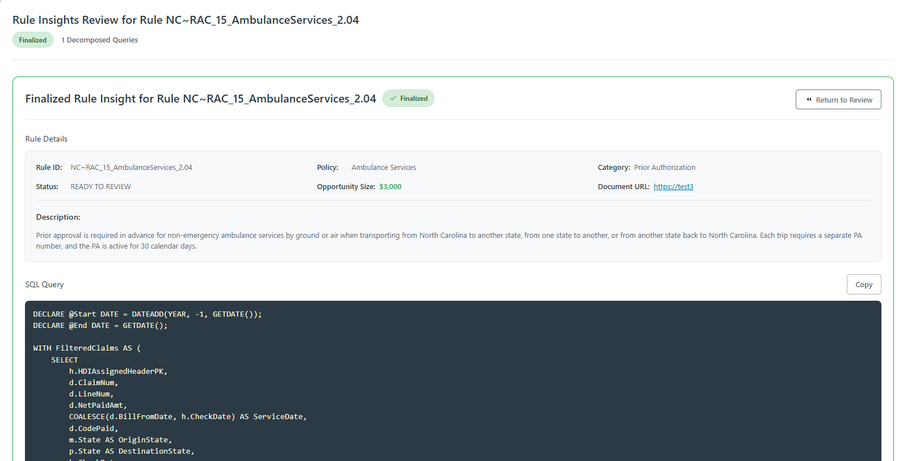
Figure 4.6: Finalized Rule Insights
(Click to enlarge)
After finalization: Badge changes to Finalized, status auto-changes to Ready to Review, and Return to Review button appears for editing.
5. Accepting or Rejecting Rules
When status is "Ready to Review", Accept/Reject buttons appear on Rule Details page.
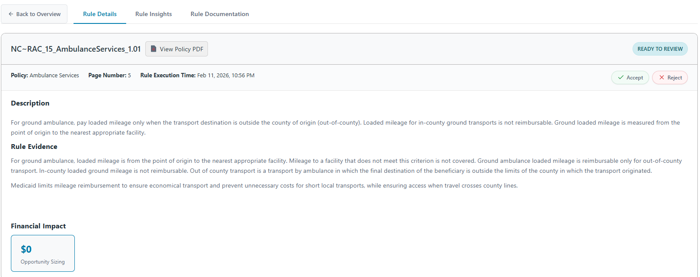
Figure 5.1: Accept/Reject Buttons
(Click to enlarge)
Accept Rule
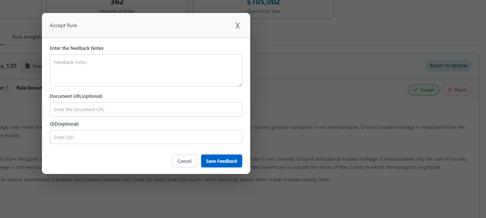
Figure 5.2: Accept Dialog
(Click to enlarge)
| Field | Required |
|---|
| Feedback Notes | Yes |
| Document URL | No |
| QID (Query Identifier) | No — links to production |
Reject Rule
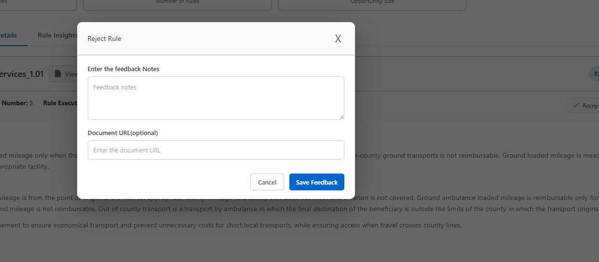
Figure 5.3: Reject Dialog
(Click to enlarge)
| Field | Required |
|---|
| Feedback Notes | Yes |
| Document URL | No |
Final State
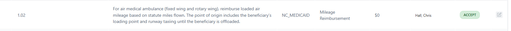
Figure 5.4: Accepted Rule (Locked)
(Click to enlarge)
Once accepted/rejected: Status shows Accept or Reject, edit icon is disabled, no further changes allowed.
6. Workflow Summary
NOT STARTED → IN PROGRESS → Finalize Query → READY TO REVIEW → ACCEPT / REJECT
↓ (locked)
ON HOLD ←──────────────────────────────────────────────────────────→ NOT FEASIBLE
| Role | Actions |
|---|
| Reviewer | Set In Progress → Review Rule Insights → Finalize Query → Add Documentation |
| Approver | Filter by Ready to Review → Review finalized query → Accept or Reject with feedback |
Why Feedback Matters: Your feedback helps improve the platform, prioritize development, and adds explainability to rule decisions.
×